SOLWEIG input data for eight cities
Data collection, processing and validation: DEM, DSM, land cover and tree canopy
Miami, Dallas, Houston, Los Angeles, New York City, San Francisco, Philadelphia, Tucson
What I produced
Four rasters per city, for SOLWEIG:
- DEM: bare-earth elevation
- DSM: ground plus buildings (no trees)
- Land cover: paved, building, grass, bare soil, water
- CDSM: tree canopy height
All four share one grid per city: 1 m pixels, the city's UTM zone, and the boundary's bounding box plus a 500 m buffer. The rasters are not clipped to the boundary, so shading at the edge comes from real surroundings.
Data sources
| Layer | Source | Notes |
|---|---|---|
| DEM | USGS 3DEP 1 m DEMs | 18 survey projects, 2013–2024. USGS 10 m DEM only for gaps in buffers. |
| DSM roofs | Airborne lidar: USGS Entwine (Dallas, Houston, LA, SF, Tucson), NOAA COPC (Miami, NYC, Philadelphia) | Flown 2017–2023. |
| Building footprints | Overture Maps; Microsoft ML building footprints | Microsoft used only where Overture has no building. |
| Land cover | UrbanWatch 1 m, NOAA C-CAP 1 m, ESA WorldCover 10 m | In that priority order. |
| Canopy | Meta / WRI canopy height v2 | Model output from aerial imagery. |
| Checks | NAIP 2022–23 imagery, Wikipedia building heights, Wikimedia photos | QA and validation only. |
Full per-city list on the last slide.
Processing steps
- DEM: newest USGS 1 m project per 10 km tile, older projects to fill gaps, 10 m DEM for anything left, open water set to 0 m.
- Lidar: streamed from cloud-optimised point clouds instead of downloading raw files (~870 GB for the first four cities). Only octree nodes over building footprints were read. Highest return kept per 1 m cell.
- DSM: DEM everywhere, lidar roof heights inside footprints. Roof cells without a return take the nearest lidar point on the same building, then the building mean, then the Overture height.
- Noise removal: per-city height cap (150–600 m), removal of cells more than 20 m above all neighbours, and a 5 m morphological opening for narrow features (cranes, masts).
- Land cover: UrbanWatch, then C-CAP, then WorldCover; building footprints burned in at 1 m; DEM = 0 set to water.
- Canopy: Meta CHM v2, set to 0 on buildings and water.
- Patches: Microsoft buildings added (26,697). Footprints with no roof in the lidar given a height: Overture, then Microsoft, then the city's typical lidar house height.
- QA: automated checks on every pixel, 55 landmark comparisons, 172-building benchmark, aerial spot checks.
Code: build_solweig_inputs.py (main pipeline), extra_buildings.py, fix_flat_footprints.py, qa_check.py, height_benchmark.py, validation_slides.py, canopy_tile.py, compact_rasters.py.
Source maps (interactive)
Which dataset each part of each raster came from. Scroll to zoom, drag to pan, hover a source map to read the dataset.
Issues found and how I fixed them
Roof resolution: first pass vs rebuild
The first pass read lidar at about 2 m spacing (Philadelphia at about 10% density) and filled roof gaps with a 3×3 maximum, which made buildings look blocky. I re-read all eight cities at about 1 m and filled gaps from the nearest real roof point. Houston used 1.3 m citywide and full density within 200 m of its 1,231 buildings taller than 25 m (130 GB instead of 376 GB).
Philadelphia, NYC and SF include buffer areas outside their lidar survey (New Jersey, Nassau County, Marin, East Bay), where heights come from Overture or Microsoft. Inside the surveys almost every roof pixel has a lidar return.
1 km downtown blocks in 3D (interactive)
1 m data. Drag to rotate, scroll to zoom, right-drag to pan. "Old" simulates the first-pass method on the same lidar. Sun position is computed from the block latitude, date and solar time (12:00 = sun due south); shadows come from the buildings, tree crowns and trunks.
Validation: 55 landmarks
Towers, summits, lakes and a stadium (seven per city, six in Tucson) compared with published heights or elevations. Pass criteria: buildings within 10 m or 10%, summits and ground within 5 m, water classified as water and flat. All 55 pass.
Validation: 172 tall buildings
Highest point in the DSM vs published height, for every building on each city's tallest-buildings list that was standing when the lidar was flown. 147 of 172 are within tolerance; most of the rest are thin spires or open crowns. Hover a point for details.
Validation sheets
One sheet per landmark: photo, top-down lidar image, raster, and a cross-section through the highest point. Click to enlarge.
Canopy check: Meta vs lidar
I compared the Meta canopy with a lidar canopy on each 1 km block. Lidar trees are non-ground, non-building returns kept only where NAIP near-infrared shows vegetation (NDVI above 0.12), with features narrower than 3 m and anything above 35 m removed.
Where both show a tree, Meta is 1.3–5.3 m lower in every block. In downtown LA and Dallas Meta also marks trees along tall building edges. In continuous woodland (earlier check in Houston) Meta's bias was +0.03 m.
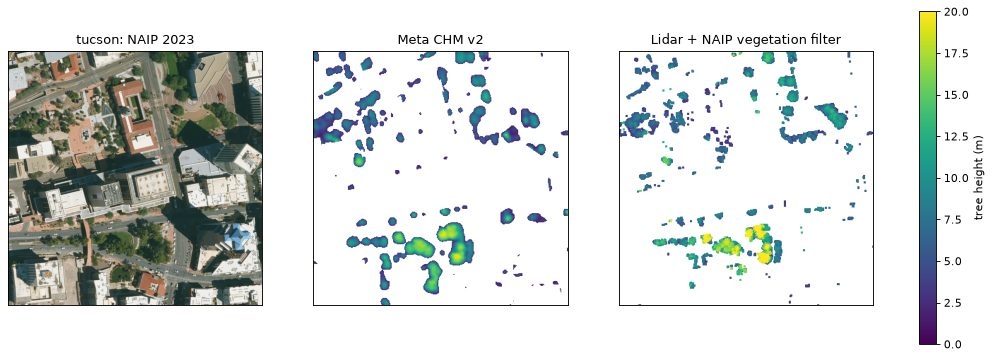
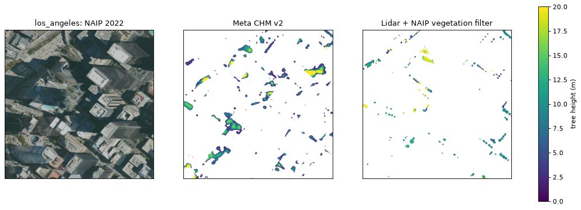
Remaining issues and next steps
Remaining issues
- Buffer areas outside each lidar survey use Overture or Microsoft heights.
- Buildings finished after the lidar flight use estimated heights.
- Meta canopy underestimates urban tree height.
- Tucson land cover is 10 m (no public 1 m product).
Next steps
- Run SOLWEIG on all eight cities.
- Replace Meta with a citywide lidar canopy where lidar exists.
- Add lidar for the NYC, Philadelphia and SF buffers.
- Request the Pima Association of Governments land cover for Tucson.
Lidar working grids are kept (68 GB), so the DSM can be refined without downloading again.
Appendix: sources by city
SOLWEIG input data: three more cities
Same pipeline, now with a tree canopy built from the lidar itself
Seattle, Denver, Boulder
What I produced
Five rasters per city, for SOLWEIG:
- DEM: bare-earth elevation
- DSM: ground plus buildings (no trees)
- Land cover: paved, building, grass, bare soil, water
- CDSM: tree canopy height from Meta / WRI (same as the first eight cities)
- CDSM_lidar (new): tree canopy height measured by the lidar, checked against NAIP imagery
Same grid rules as before: 1 m pixels, the city's UTM zone, and the boundary's bounding box plus a 500 m buffer.
Data sources
| Layer | Source | Notes |
|---|---|---|
| DEM | USGS 3DEP 1 m DEMs | King County 2021 (Seattle); DRCOG 2020 with South Platte 2013, Eastern Colorado 2018 and Arapaho–Roosevelt NF 2023 for gaps (Denver, Boulder). |
| DSM roofs and lidar canopy | Airborne lidar from USGS Entwine: WA King County 2021, CO DRCOG 2020 | Read over the whole grid this time, not only over buildings. |
| Building footprints | Overture Maps; Microsoft ML building footprints | Microsoft used only where Overture has no building. |
| Land cover | UrbanWatch 1 m, NOAA C-CAP 1 m, ESA WorldCover 10 m | UrbanWatch covers Seattle and the Denver city limits. C-CAP 1 m exists for Washington only. |
| Canopy | Meta / WRI canopy height v2; lidar vegetation returns | Both delivered, so SOLWEIG can be run with either. |
| NDVI | NAIP 2021–23 aerial imagery (red and near-infrared) | Used to keep only living vegetation in the lidar canopy. |
| Checks | Wikipedia building heights and elevations, Wikimedia photos | Validation only. |
Full per-city list on the last slide.
Processing: what changed from the first eight
- Lidar over the whole grid: every octree node, all classes, at the finest level with point spacing of 1 m or less (Seattle 0.5 m, Boulder 0.79 m, Denver 0.93 m). Roofs, vegetation and coverage are kept in three working grids. Seattle was 55 GB of lidar, Denver 77 GB.
- Lidar canopy: highest vegetation return minus the DEM, kept only where NAIP shows living vegetation (NDVI above 0.12). Removed: buildings (plus 2 m), water, anything above 35 m, spikes more than 4 m above their neighbours, features thinner than 3 m (wires, poles, wall edges) and crowns under 6 m². Crowns are then closed and lightly smoothed.
- NDVI: NAIP read block by block from the Planetary Computer and resampled to the 1 m grid. Colorado NAIP is 0.3 m, so it was read at its 0.6 m overview.
- Unchanged: DEM mosaic, DSM roofs with nearest-roof gap fill, noise filters, land-cover priority, Microsoft building patch, flat-footprint fix, QA, landmark validation and benchmark.
Code: build_solweig_inputs.py (steps lidar, ndvi, canopylidar), run_chain.py runs the whole sequence for each city.
Source maps (interactive)
Which dataset each part of each raster came from. Scroll to zoom, drag to pan, hover a source map to read the dataset.
Issues found and how I fixed them
Roofs: lidar coverage
All three cities sit inside one recent lidar survey, so almost every roof pixel has its own lidar return. The rest are filled from the nearest roof point on the same building.
Footprints with no roof in the lidar (built after the flight, or demolished) were handled as before: Overture height, then Microsoft, then the city's typical lidar house height; footprints with nothing standing were set to paved.
1 km blocks in 3D (interactive)
1 m data. Drag to rotate, scroll to zoom, right-drag to pan. Seattle and Denver blocks are centred on the tallest building, Boulder on downtown (Pearl Street), and a second Seattle block on the Space Needle and Seattle Center. Trees: "Lidar" is the new CDSM_lidar, "Meta" the Meta / WRI canopy.
Validation: landmarks
Same criteria as before: buildings within 10 m or 10%, summits and ground within 5 m, water classified as water and flat. Boulder has no towers with published heights (city height limit of 55 ft), so it is checked on two summits, Folsom Field and Boulder Reservoir. All 18 pass.
Validation: tall buildings
Highest point in the DSM vs published height, for every building on Wikipedia's tallest-buildings lists for Seattle and Denver that was standing when the lidar was flown. Hover a point for details.
The three Denver points far below the line (707 17th Street, 555 17th Street, 17th Street Plaza) are matching misses: the footprint found at the Wikipedia coordinates is a low building (10–55 m), not the tower.
Validation sheets
One sheet per landmark: photo, top-down lidar image, raster, and a cross-section through the highest point. Click to enlarge.
Canopy: Meta vs the new lidar canopy
Citywide, over the full grid (trees taller than 2 m):
On each 1 km block, with the same check used for the first eight cities:
Meta is a model trained on imagery; the lidar canopy is measured. The 3D block slide switches between the two.
Remaining issues and next steps
Remaining issues
- Boulder land cover is 10 m (WorldCover) with 1 m buildings: Denver's UrbanWatch stops at the Denver city limits and Colorado has no 1 m C-CAP.
- Denver outside the city limits (74% of the grid) is also 10 m land cover.
- Buildings finished after the 2020–21 lidar use estimated heights.
Next steps
- Austin: lidar finished (276,000 nodes, about 190 GB); DSM, land cover and canopy next.
- Atlanta: queued after Austin.
- Run SOLWEIG with both canopies and compare.
Appendix: sources by city
SOLWEIG input data: Austin and Atlanta
Same pipeline, plus a fix for roofs hidden under trees
Austin, Atlanta
What I produced
The same five rasters per city as part 2: DEM, DSM, land cover, CDSM (Meta / WRI) and CDSM_lidar. All 13 cities are now done.
Austin is the largest lidar download so far: 15.9 billion points, about 191 GB. Atlanta was about 3.8 billion points, about 45 GB.
Data sources
| Layer | Source | Notes |
|---|---|---|
| DEM | USGS 3DEP 1 m DEMs | TX Central 2017 (Austin); GA Statewide 2018 with GA Central 2019 for gaps (Atlanta). |
| DSM roofs and lidar canopy | Airborne lidar from USGS Entwine: TX Central 2017, GA Statewide and GA Central 2018 | Read over the whole grid, as in part 2. |
| Building footprints | Overture Maps; Microsoft ML building footprints | Microsoft used only where Overture has no building. |
| Land cover | UrbanWatch 1 m (Atlanta 2017), ESA WorldCover 10 m | UrbanWatch covers 49% of the Atlanta grid. Austin has no 1 m source, so it is WorldCover with 1 m buildings. |
| Canopy | Meta / WRI canopy height v2; lidar vegetation returns | Both delivered. |
| NDVI | NAIP aerial imagery (red and near-infrared) | Keeps only living vegetation in the lidar canopy. |
| Checks | Wikipedia building heights, Wikimedia photos, NAIP photos | Validation only. |
Processing: what changed from part 2
- Unchanged: whole-grid lidar, lidar canopy, NDVI, Microsoft building patch, flat-footprint fix, QA and validation.
- Tower roofs in Atlanta: the 2018 Georgia lidar puts most tower roof returns in a vegetation class, so vegetation-class returns above 38 m count as roofs.
- New step, Atlanta only: roofs_under_canopy.py re-reads the lidar under every footprint and recovers roofs hidden by trees. The next slides show it.
Code: roofs_under_canopy.py. The rasters from before the fix are kept, so it can be rerun or undone.
Source maps (interactive)
Which dataset each part of each raster came from. Scroll to zoom, drag to pan, hover a source map to read the dataset.
Issues found and how I fixed them
Roofs: lidar coverage
Austin matches the part 2 cities. Atlanta started at 85%, well below every other recent city, so I looked into why.
The Atlanta figure is after the fix and is approximate: it adds the cells set by the fix to the original lidar roof count.
Atlanta: roofs under the trees
- Symptom: only 85% of roof pixels came straight from lidar, and 71,693 footprints looked flat in the lidar.
- Cause: the 2018 survey put returns that reach a roof through trees in the vegetation classes, and the DSM step drops vegetation classes.
- Evidence: of 120 flat footprints sampled, 107 were under 2018 canopy. The rest were bare ground in 2018, so probably built after the flight.
- Old result: roof cells copied a nearby height. Flat footprints got a default height or an Overture height, or became paved.
The fix
- Per 1 m cell, take the lowest vegetation-class last return 1.5–38 m above the DEM. Under a canopy, that return is the roof.
- Gap-filled roof cells: take that return if it is within 3 m of the filled height.
- Flat footprints: take a roof height if returns cover at least 40% of the footprint at one level (interquartile range up to 2 m) and the footprint is at most 2,000 m².
- Test: on 2.2 million cells with both kinds of return, the median gap to real roof returns is +0.11 m, and 68% agree within 1 m.
Atlanta: before and after the fix
300 m windows. Height panels run from 0 m (dark) to 20 m (bright). In the last panel, blue is lower and red is higher, scale ±4 m.
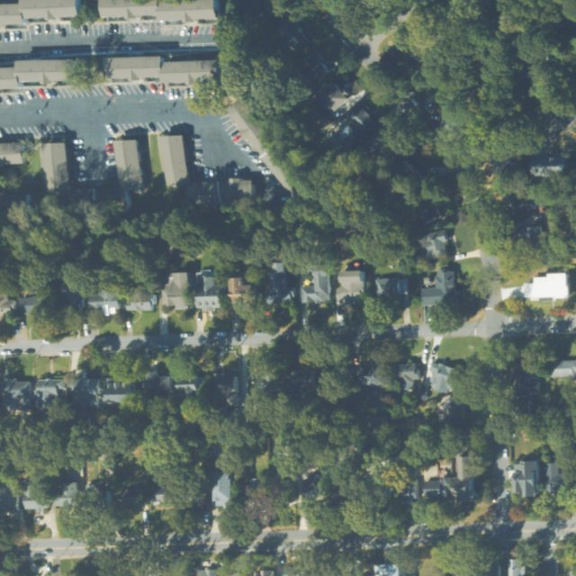
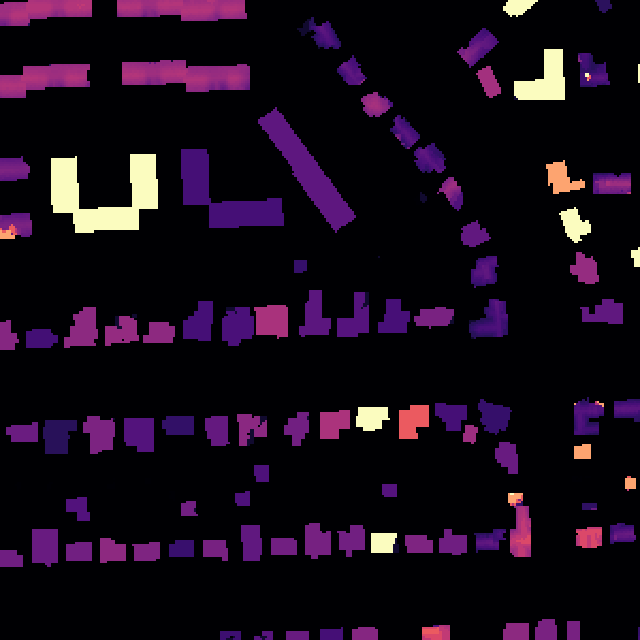
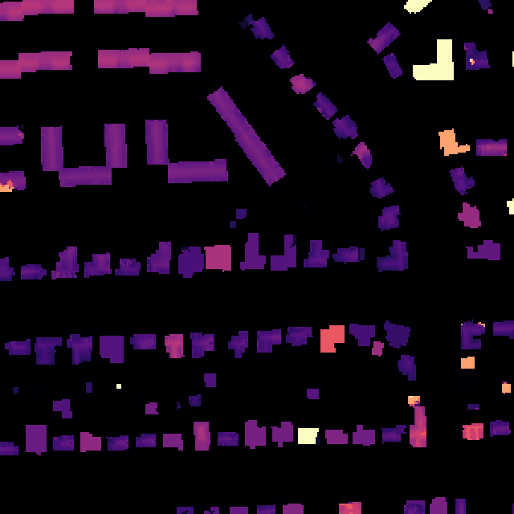
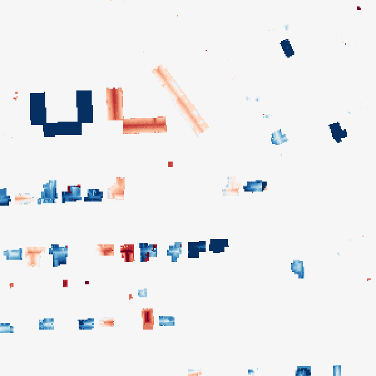
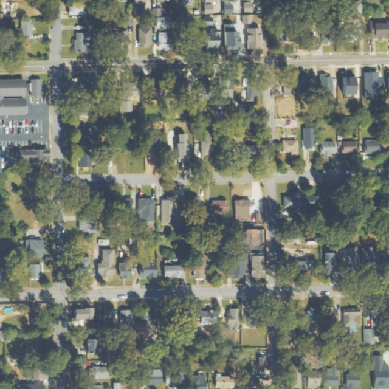
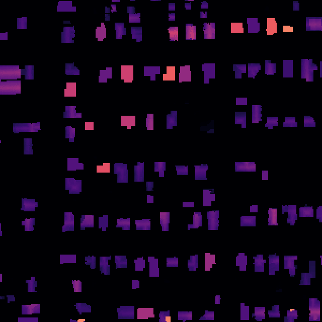
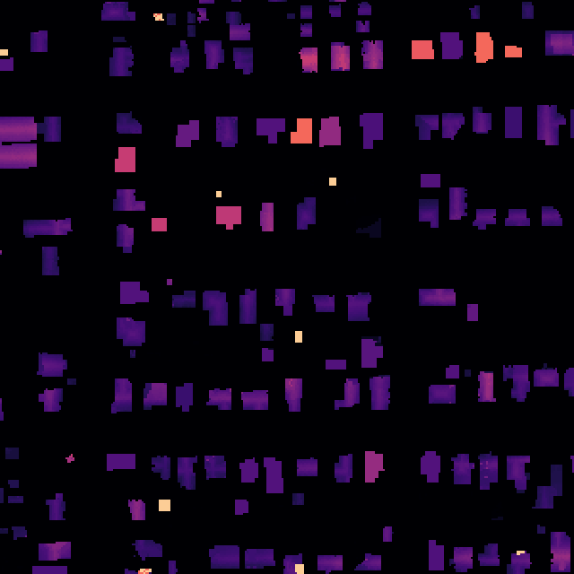
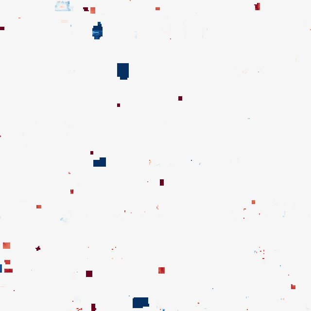
Top: the U-shaped apartment block drops from Overture's 21.1 m to a measured 6.6 m. Bottom: small buildings that had been set to paved come back.
Atlanta: what changed
21,220 of the 71,693 flat footprints gained a measured roof. Heights are medians for those footprints.
| Previous source | Footprints | Roof found | Before | After |
|---|---|---|---|---|
| Overture height | 27,008 | 9,012 | 6.0 m | 4.5 m |
| Set to paved | 22,485 | 7,265 | 0.05 m | 3.1 m |
| 5.1 m house default | 13,019 | 2,645 | 5.1 m | 3.9 m |
| Microsoft or other | 9,181 | 2,298 | 5.0 m | 4.6 m |
- 1.76 million gap-filled roof cells now use a measured return. Another 2.03 million were rejected and kept their filled height.
- 3.69 million DSM cells changed (0.5% of the grid), by 1.84 m on average: 50% moved 1 m or less, 31% dropped more than 1 m, and 19% rose more than 1 m.
- 136,023 cells went from paved to building. Canopy did not change.
Atlanta: photo checks
Overture heights can be far off
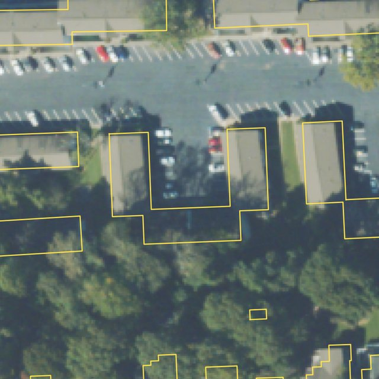
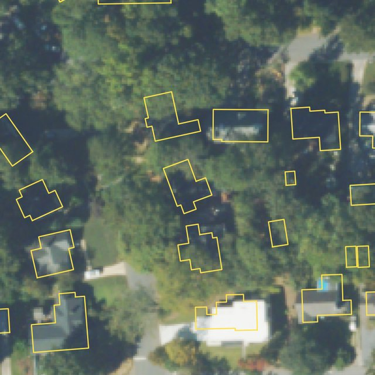
Left: 963 m² apartment block, Overture 21.1 m, lidar 6.6 m. Right: 141 m² house, Overture 25.4 m, lidar 4.8 m.
The first version made false roofs
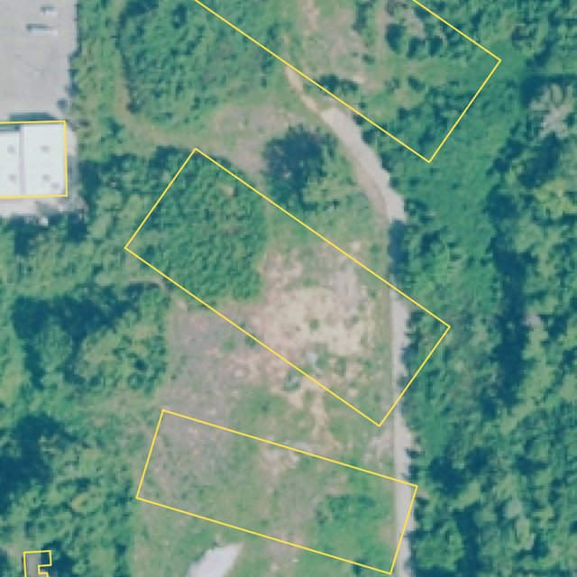
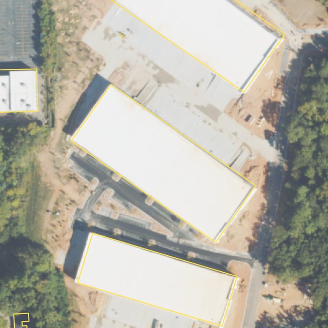
A 6,541 m² warehouse built after the flight (2017, then 2023): the "roof" was scrub. A 3,360 m² lot of parked trailers failed the same way. Both led to the 2,000 m² cap and the 40% rule.
Blocks in 3D (interactive)
Drag to rotate, scroll to zoom, right-drag to pan. Austin is centred on The Austonian. Waterline, the taller tower in that block, was built after the lidar, so its height comes from Overture. Atlanta has three blocks: Georgia Tech plus the Pencil Building (Bank of America Plaza), 2.2 km wide, so it takes a few seconds to build the first time; Mercedes-Benz Stadium; and Truist Plaza. The stadium and Truist blocks are 1 km wide. All are 1 m data. Trees: "Lidar" is CDSM_lidar, "Meta" the Meta / WRI canopy.
Validation: landmarks
Same criteria as before: buildings within 10 m or 10%, and water classified as water and flat. All pass. The largest gaps are 360 Condominiums (+14 m, +9%) and Bank of America Plaza (+12 m, +4%), where the lidar catches part of the spire above the roof.
Validation: tall buildings
Highest point in the DSM vs published height, for every building on Wikipedia's tallest-buildings lists for Austin and Atlanta that was standing when the lidar was flown. Hover a point for details.
Left out as built after the flight: Austin's Waterline, The Independent, Fairmont, Block 185, Indeed Tower, Fifth & West and Sixth and Guadalupe; Atlanta's 1072 West Peachtree and The Hue Midtown.
Validation sheets
One sheet per landmark: photo, top-down lidar image, raster, and a cross-section through the highest point. Click to enlarge.
Canopy: Meta vs the lidar canopy
Citywide, over the full grid (trees taller than 2 m):
On each 3D block:
Atlanta's canopy is the heaviest of any city: lidar trees cover about 44% of the grid, which is why so many roofs were hidden.
Remaining issues and next steps
Remaining issues
- 50,473 flat Atlanta footprints keep their old values because their under-canopy returns were too sparse or uneven.
- The fix has a few small false positives, such as theme-park structures at Six Flags. Trailers under 2,000 m² could pass too.
- Buildings finished after the lidar (2017 Austin, 2018 Atlanta) use estimated heights, including Austin's tallest towers.
- Austin land cover is 10 m, and so is the 51% of the Atlanta grid outside UrbanWatch.
Next steps
- Check the other cities for the same under-canopy problem.
- Add Austin and Atlanta to the land-cover comparison.
- Run SOLWEIG with both canopies and compare.
Appendix: sources by city
Land cover: UrbanWatch vs Dynamic World
How old is our 1 m land cover, can a current 10 m product replace it, and can the two be combined?
All 13 cities
The question
The delivered land cover is mostly UrbanWatch: 1 m and detailed, but mapped from 2014–17 photos, so it is 8–11 years old. Google's Dynamic World is updated every few days from Sentinel-2, but at 10 m. Which should SOLWEIG use, or can they work together?
| UrbanWatch | Dynamic World | |
|---|---|---|
| Pixel size | 1 m | 10 m |
| Made from | NAIP aerial photos (1 m, 4 bands) | Sentinel-2 satellite images |
| Dates | One snapshot per city: 2014 (LA, SF), 2016 (Dallas), 2017 (the rest) | Every clear image since mid-2015, every 2–5 days |
| Classes | building, road, parking, tree, grass/shrub, agriculture, water, barren | water, trees, grass, flooded vegetation, crops, shrub, built, bare, snow, each with a probability |
| Coverage | Mostly city limits (20–54% of our grids) | Global |
Other references: NOAA C-CAP 1 m 2020 (Houston's base) and ESA WorldCover 2021 at 10 m (Tucson, Boulder, Austin). For SOLWEIG the land cover needs paved, building, grass, bare soil and water; trees come from the canopy raster, so built vs green matters most.
Method
- Dynamic World composites: for each city, the mean class probabilities over every clear Sentinel-2 view in the reference year (the year of the 1 m source), 2024 and 2025, at 10 m on each city's own grid.
- Five shared classes: built (building + paved), tree, low vegetation, bare, water.
- 10 m reference: the share of each class from the 1 m source in every 10 m cell, plus the share covered by current Overture footprints.
- Same-year test: Dynamic World vs the 1 m source in the same year. No time gap, so disagreement is the cost of 10 m pixels and the model, not change.
- Change test: Dynamic World's reference year vs 2024 and 2025. A cell counts as changed only if both recent years agree on the new class and its probability rose by at least 15 points.
- Photo check: about 150 cells flagged "to built", 150 "to vegetation" and 300 unchanged per city, compared in NAIP photos from near the reference year and the newest year.
- Combination: update the 1 m map only inside flagged cells, pixel by pixel from newer 1 m evidence where it exists.
Code: landcover_compare/ (dw_download.py, reference.py, compare.py, validate_naip.py, fuse.py, figures.py). Dynamic World came from Google Earth Engine.
Same year: how often does Dynamic World agree with the 1 m map?
Share of 10 m cells where Dynamic World's class matches the 1 m map's majority class, in the same year. "Pure" cells are at least 80% one class; "mixed" cells hold several surfaces, like a roof, a yard and a street tree.
Where the disagreement goes (interactive)
Rows: the 1 m map's class. Columns: Dynamic World's class, same year. Each row adds up to 100%. Darker = more cells.
Found = share of the 1 m map's cells of a class that Dynamic World also calls that class (producer's accuracy). Right = share of Dynamic World's cells of a class that really are that class (user's accuracy).
How much of each class? (interactive)
Area of each class over the same cells: from the 1 m map, from Dynamic World's labels (each 10 m cell gets one class), and from its probabilities (each cell split by class probability).
Dynamic World's probabilities are better than its labels
Its built probability, compared with the built share of each 10 m cell in the 1 m map. It tracks the city total well but misses individual cells by 20–35 points, so it is good for totals, not for pixels.
Correlation and mean error are per 10 m cell. "Calibrated" fits a straight line from probability to 1 m built share for each city.
Change since the 1 m map: how much is real?
Share of each grid that changed class. "Changed" needs 2024 and 2025 to agree on the new class with a 15-point rise in probability. "2025 only" is the naive comparison. "Year-to-year noise" is where 2024 and 2025 disagree with each other.
What changed into what (interactive)
Area of each class-to-class change since the reference year, km², largest first.
- Los Angeles: most "shrub to tree" is hillsides greening after the wet winters of 2023–24, following the 2016 drought.
- Houston: about 80 km² of trees and grass swapping both ways looks like storm damage and regrowth after Hurricane Beryl (July 2024). Not checked cell by cell.
- Seattle and New York: 41–46% of flagged cells were already the new class in UrbanWatch: Dynamic World's old label was wrong, not the ground.
Can Dynamic World see new buildings?
Test against current Overture footprints: 10 m cells where buildings now cover at least 30 points more of the cell than in the 1 m map. Those are buildings built since the reference.
Does the change show up in aerial photos?
NAIP photos are independent of Sentinel-2. For each flagged cell, did its greenness (NDVI) drop or rise, compared with the typical change in unchanged cells? Photos from different years differ in season and drought, so this corrects for that.
Blind spots: a cell can turn built without losing greenness (a gravel lot paved, graded land built on), which is most change in LA and Tucson. Seattle's two photo years differ so much that a third of unchanged cells pass too. So these rates are a floor.
Weighing the two
| What matters | UrbanWatch | Dynamic World | Better |
|---|---|---|---|
| Street-scale detail (yards, street trees, narrow streets) | 1 m, resolves them | 10 m, merges them into "built" | UrbanWatch |
| Building vs paved | Separate classes | One "built" class | UrbanWatch |
| Built area | Matches footprints | Too much (labels) | UrbanWatch |
| Urban trees | Mapped | Mostly missing | UrbanWatch |
| Recency | 2014–17, 8–11 years old | Current to 2025 | Dynamic World |
| Change over time | One snapshot | A consistent yearly series | Dynamic World |
| Coverage | Mostly city limits | Everywhere | Dynamic World |
| Confidence | None given | A probability per class | Dynamic World |
| Year-to-year stability | Not applicable | Labels flip in some cells every year | Use with care |
For SOLWEIG an over-built map is the worse error: it puts paved surface where yards and parks are, so simulated afternoons run too hot. Trees come from the canopy raster anyway.
Using them together
Dynamic World says where and when the ground changed; 1 m sources say exactly which pixels. The combination keeps the delivered map and changes a pixel only when both agree.
- Base: the delivered 1 m land cover, with buildings from current Overture footprints. Buildings never change in this step.
- Where: only 10 m cells flagged as changed (2024 and 2025 agree, probability up 15 points).
- Which pixels: from newer 1 m evidence. C-CAP 2020–22 impervious says paved; NAIP NDVI below 0.2 says paved, above 0.3 says green. Pixels the evidence contradicts keep their class.
- No 1 m evidence: Dynamic World's class is used only if it is at least 60% confident. New concrete is often "bare" in Dynamic World, so built and bare are judged together.
Output: <city>_landcover_fused.tif on the same grid. The delivered rasters are unchanged.
What the combination changed
Area of 1 m pixels updated per city, split by whether a newer 1 m source decided each pixel or Dynamic World alone did.
Examples: the 1 km window with the most change (interactive)
Top: NAIP photo, Dynamic World and the delivered 1 m map then. Bottom: the same now, with the combined 1 m map and updated pixels outlined in magenta. Click the image to enlarge.
Limitations and next steps
Limitations
- No true accuracy for the change map yet. The photo test gives a floor in green cities and nothing in dry ones.
- Thresholds were chosen, not tuned. The 15-point rise and 60% confidence are sensible defaults.
- New concrete vs bare soil. Without 1 m evidence, some new lots end up bare instead of paved.
- Still dated where nothing newer exists. Houston's 2020 base and the WorldCover cities are only updated where Dynamic World sees change.
- Not yet tested in SOLWEIG.
Next steps
- Build NAIP NDVI for the cities without it (Dallas, Houston, Philadelphia, Tucson, LA, San Francisco, New York) and rerun the combination: it turns 10 m guesses into 1 m decisions.
- Hand-label about 200 flagged cells per city to measure real precision and recall, and tune the two thresholds.
- Run SOLWEIG on a few changed blocks with the delivered and combined maps and compare.
Cool routes: walking by perceived effort
A prototype that runs SOLWEIG on our rasters and routes around heat and hills, precomputed for 13 downtowns on a typical July 2026 day
How it works
- Study areas: one per city, 2 × 2 km of walking paths from OpenStreetMap inside a 2.4 km model area (so shade from buildings just outside still counts), centred on the same downtown landmark as the city's 3D block. Seattle's runs from downtown to Capitol Hill.
- SOLWEIG-light on our DSM, DEM, lidar canopy and land cover at 2 m: sky view, then hour-by-hour shadows, mean radiant temperature (Tmrt) and UTCI.
- Weather: each city's default is a typical July 2026 day, the median of each hour over the month from Open-Meteo (ERA5). Seattle's June 2021 heat dome is kept as a separate choice, and live runs take any date.
- Every path segment gets its hourly UTCI and shade, and the browser finds three routes: shortest, fastest (slope-aware, Tobler's walking speed) and least perceived effort (slope and heat).
- Live mode: a small local server crops the model to a corridor around the shortest route and runs only the hours of the walk, reusing the precomputed sky view.
- Tree crowns can be grown 0–3 m; +1 m is the default because NAIP shows the first metre around lidar crowns is mostly vegetation.
13 cities on a typical July day
| City | Study area | Peak air temp. | UTCI at 3 pm, lidar crowns | UTCI at 3 pm, +1 m crowns | Shaded at 3 pm, lidar | Shaded at 3 pm, +1 m | Hours ≥ 32 °C UTCI | |
|---|---|---|---|---|---|---|---|---|
| Tucson | downtown | 38.8 °C | 45.7 °C | 45.4 °C | 18% | 22% | 13 h | open |
| Dallas | downtown | 36.5 °C | 42.9 °C | 42.7 °C | 20% | 22% | 11 h | open |
| Austin | downtown | 35.2 °C | 41.3 °C | 41.0 °C | 24% | 27% | 11 h | open |
| Houston | downtown | 33.6 °C | 40.8 °C | 40.6 °C | 24% | 26% | 12 h | open |
| Denver | downtown | 34.5 °C | 38.8 °C | 38.5 °C | 30% | 33% | 8 h | open |
| Miami | downtown and Brickell | 32.5 °C | 38.0 °C | 37.6 °C | 35% | 40% | 10 h | open |
| Los Angeles | downtown | 32.4 °C | 37.4 °C | 37.1 °C | 36% | 38% | 7 h | open |
| Atlanta | Midtown and Georgia Tech's east edge | 31.8 °C | 37.1 °C | 36.7 °C | 33% | 38% | 9 h | open |
| Boulder | downtown and Pearl Street | 33.2 °C | 35.7 °C | 35.2 °C | 40% | 46% | 8 h | open |
| Philadelphia | Center City | 28.6 °C | 33.0 °C | 32.8 °C | 41% | 43% | 4 h | open |
| New York | Lower Manhattan | 28.7 °C | 31.9 °C | 31.8 °C | 47% | 48% | 2 h | open |
| Seattle | downtown to Capitol Hill | 23.1 °C | 27.2 °C | 26.9 °C | 43% | 46% | 0 h | open |
| San Francisco | Financial District and SoMa | 17.8 °C | 19.6 °C | 19.3 °C | 37% | 39% | 0 h | open |
- Tucson has the hottest walks (45.7 °C UTCI at 3 pm, strong heat stress for 13 hours); Seattle, San Francisco never reach strong heat stress on its typical day.
- Growing crowns by 1 m adds 1–6 points of shade on the walking network at 3 pm but lowers its average UTCI by only 0.1–0.5 °C: most of the network is streets between buildings, where crowns don't reach.
- The gap between cities (over 26 °C) is far larger than what wider crowns change, so route choice within a city matters most in the hottest ones.
Averages are over the outdoor walking network, weighted by length (covered passages left out). UTCI 32 °C is the start of strong heat stress. Shade is the share of path length in building or tree shadow.
Speed and credibility
Run times (16 threads, laptop)
| Run | Time |
|---|---|
| Study area, 24 hours (2.4 km at 2 m) | 30–45 min |
| of which sky view (geometry, done once) | 9–16 min |
| Live trip, 0.5 km (2 hours modelled) | 21 s |
| Live trip, 1.1 km | 2.4 min |
| Live trip, 1.5–1.8 km diagonal | ~5 min |
Live runs reuse the precomputed sky view and model only a corridor around the shortest route, for the departure hour and the next. They agree with the precomputed day to about 0.1 °C UTCI. Long diagonal trips still need a box covering half the area; splitting it along the route is the next speed-up.
Validation
- Shadows agree with an independent ray cast on 92–97% of ground pixels.
- UTCI matches pythermalcomfort to within 0.05 °C.
- Midday Tmrt about 70 °C in sun and 43–45 °C in shade; sky view 0.32 in a tower canyon, 0.76 in Cal Anderson Park.
- Lidar crowns look about 1 m too narrow: the first metre around them is mostly vegetated in NAIP, the second is not.
Every formula and parameter, which ones I chose, and all generated rasters are under “Under the hood” on the prototype page.